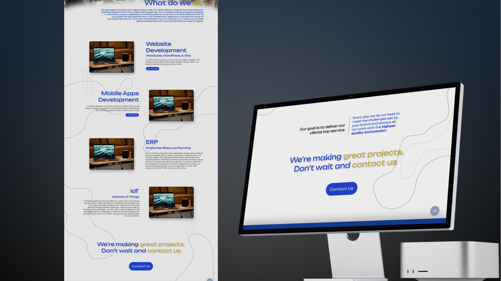
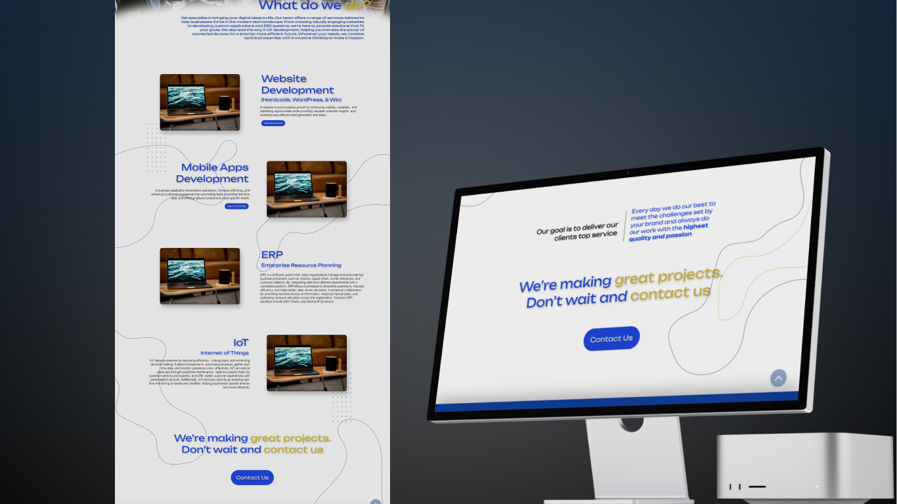

Company Profile Website
---
The Brief & Challenge
This freelance opportunity was centered on a key challenge: the client had a vision but not a technical brief. My main goal was to meet the client's needs by translating their non-technical ideas into an effective web presence.
This project taught me the importance of listening, adapting, and guiding a client from a vague idea into a concrete product.
Process & Outcome
The process started with rough sketches and simple wireframes to align on a direction. Once approved, I moved into prototyping and implementing the website, focusing on a clean, accessible design with natural navigation.
The final website successfully established their online presence. For me, it was a valuable experience in client collaboration and managing feedback.
Final Design Showcase
 

Please Note: Since this was freelance work, I can’t share every detail publicly. If you’re curious about the full process and outcome, I'd be happy to walk you through it personally.